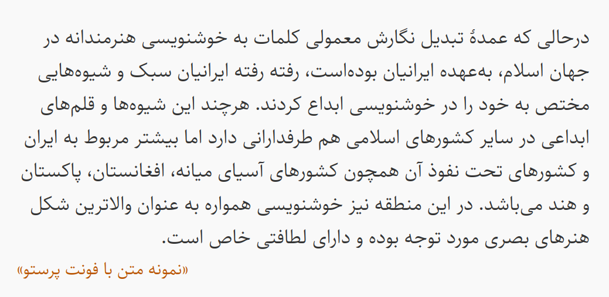

Parastoo is a refined Persian typeface designed by Saber Rastikerdar, developed with modern Farsi usage in both print and digital contexts in mind. Rooted in a traditional Naskh-inspired structure, Parastoo features clean lines, subtle serifs, and balanced proportions that give it a formal yet approachable appearance. It offers high readability and smooth visual flow, with moderate stroke contrast and thoughtful spacing that support long-form reading and dense text layouts.
Designed primarily for Farsi, Parastoo ensures accurate rendering and typographic integrity in contemporary environments, addressing many of the localization and display issues found in older, legacy Farsi fonts. While it draws stylistic influence from classic typefaces such as B Nazanin, Parastoo modernizes the aesthetic and technical foundations to better suit today’s multilingual publishing needs. It retains compatibility with other Perso-Arabic script languages, making it a versatile choice for professional and editorial use.
Please note that this is a Persian-first font and requires explicitly setting the Arabic language in your application to achieve standard Arabic text shaping.
To contribute, please see github.com/googlefonts/parastoo-font.
